- 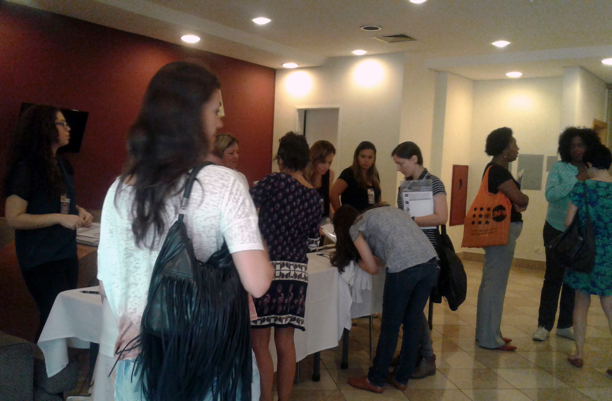 Participantes chegam ao 9º Seminário A Mulher e a Mídia, em São Paulo, no dia 22 de abril (crédito: Luciana Araújo).
- 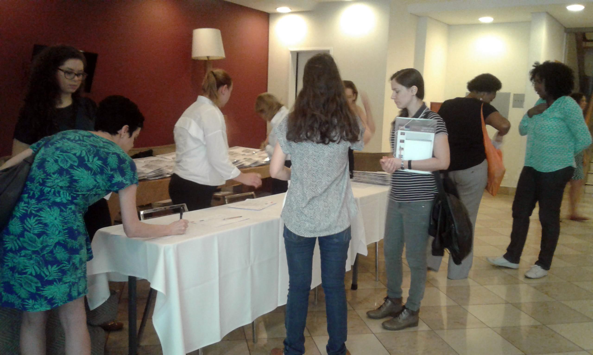 Credenciamento de participantes (crédito: Luciana Araújo).
- 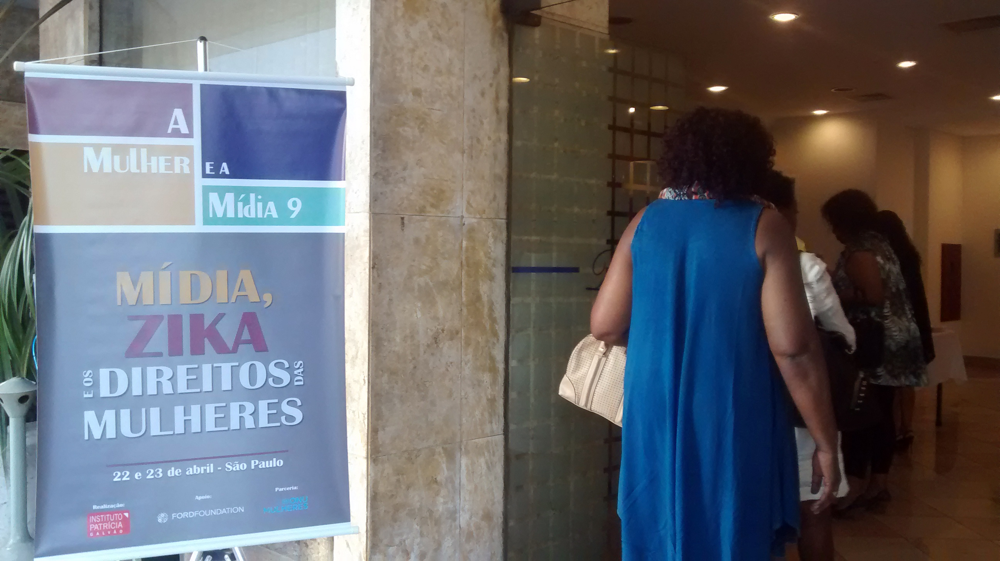 Credenciamento de participantes (crédito: Luciana Araújo).
- 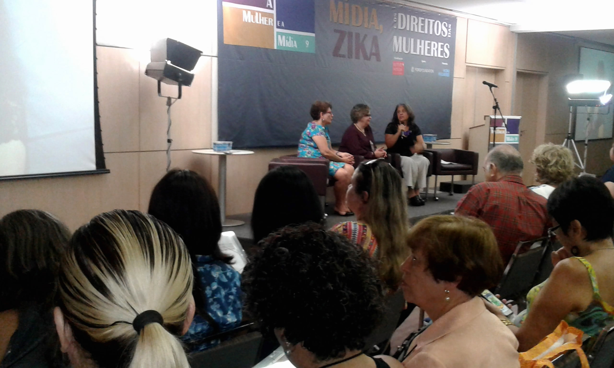 Nilcéa Freire, Nadine Gasman e Jacira Melo abrem o 9º Seminário A Mulher e a Mídia, no dia 22 de abril, em SP (crédito: Luciana Araújo).
- 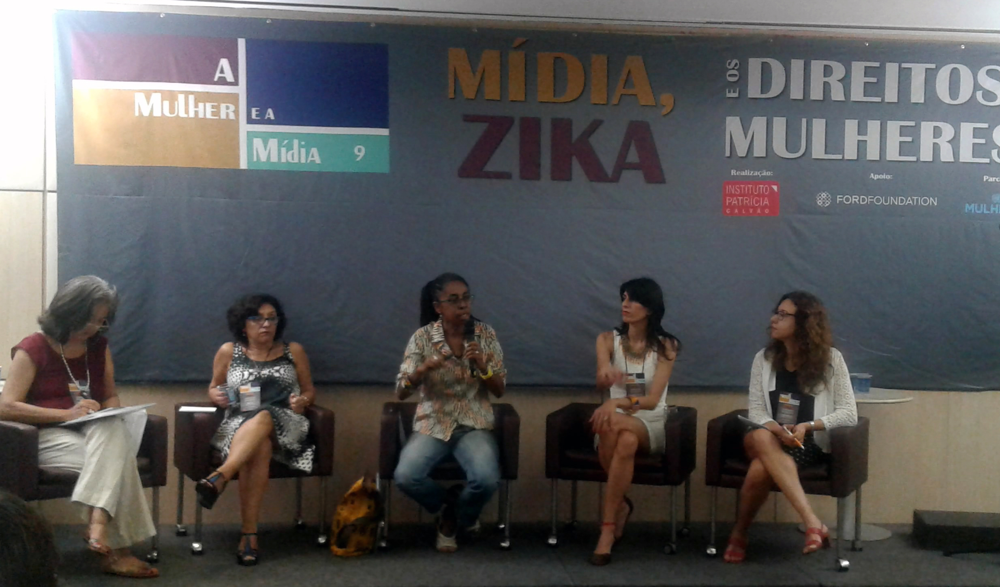 Painel 1 - Mulheres no centro da epidemia de zika, mas fora do foco principal da mídia (crédito: Luciana Araújo).
- 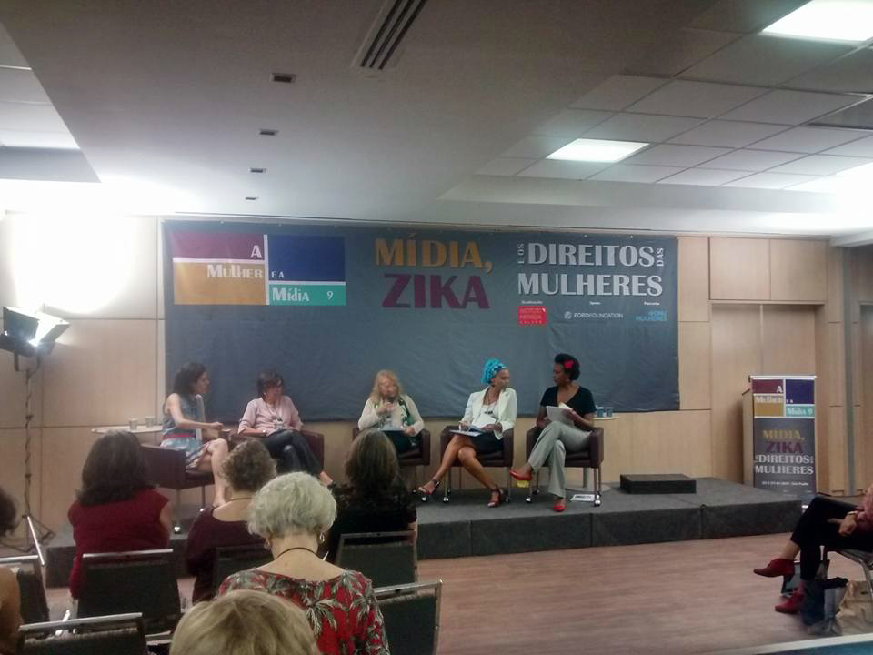 Painel 2 - Acesso à informação e planejamento reprodutivo no contexto da zika (crédito: Tainah Fernandes).
- 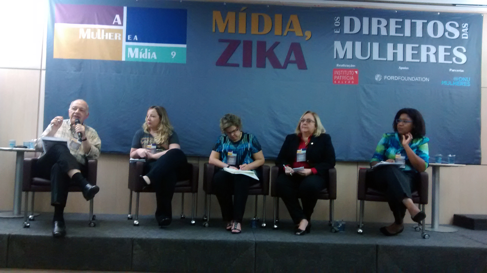 Painel 3 – As armadilhas da simplificação: síndrome congênita é mais que microcefalia, mulheres não são só cuidadoras (crédito: Géssica Brandino).
-
 Painel 4 – Estratégias de políticas públicas, mobilização social e comunicação para garantia dos direitos das mulheres em tempos de zika (crédito: Ziza Silva).
Painel 4 – Estratégias de políticas públicas, mobilização social e comunicação para garantia dos direitos das mulheres em tempos de zika (crédito: Ziza Silva).
- 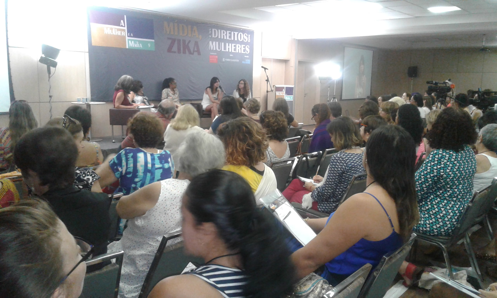 Plenário ficou lotado durante todo o Seminário (crédito: Luciana Araújo).
- 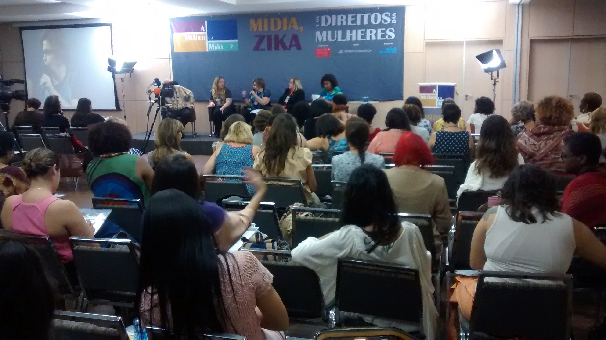 Plenário ficou lotado durante todo o Seminário (crédito: Géssica Brandino).
- 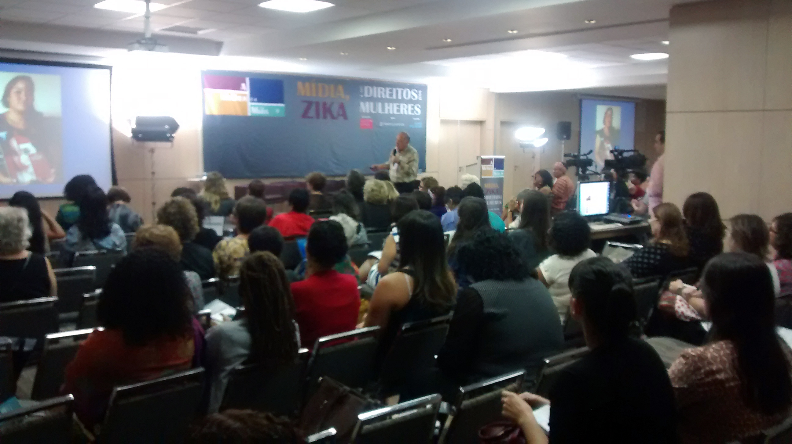 Plenário ficou lotado durante todo o Seminário (crédito: Géssica Brandino).
-
 Participantes opinam sobre o debate durante o evento (crédito: Géssica Brandino).
Participantes opinam sobre o debate durante o evento (crédito: Géssica Brandino).
- 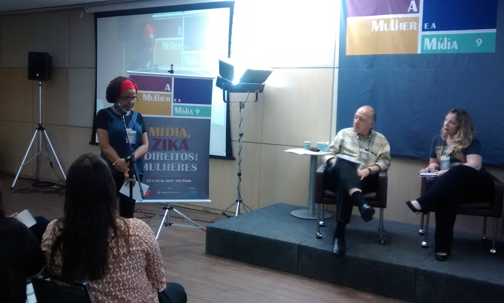 Participantes opinam sobre o debate durante o evento (crédito: Géssica Brandino).
- 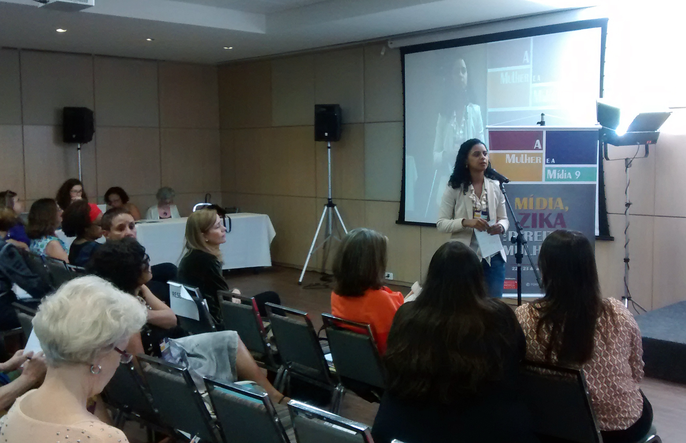 Participantes opinam sobre o debate durante o evento (crédito: Géssica Brandino).
- 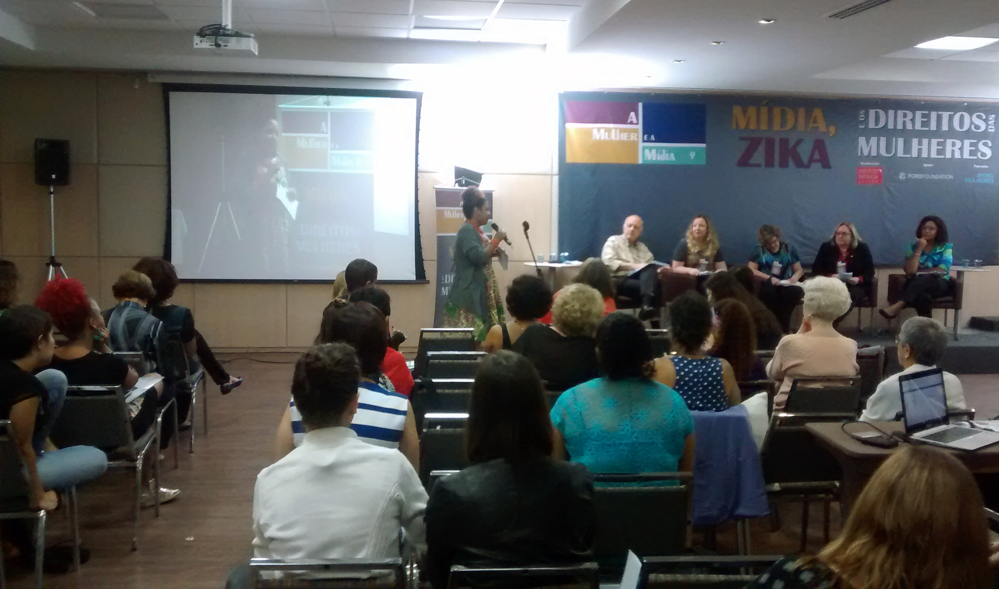 Participantes opinam sobre o debate durante o evento (crédito: Géssica Brandino).
- 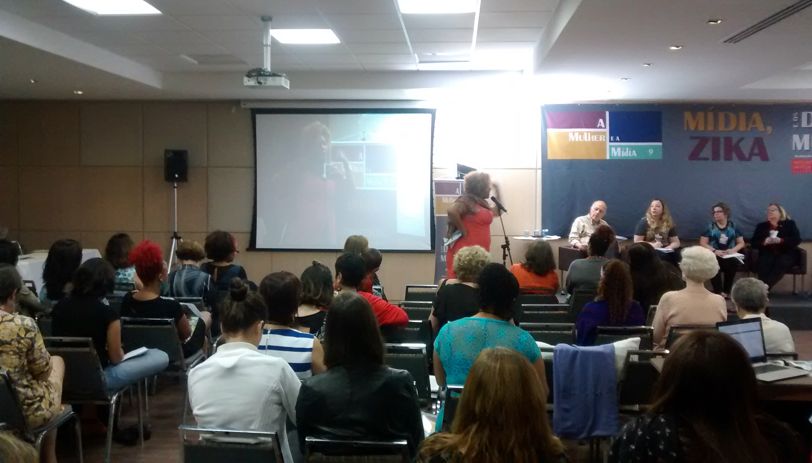 Participantes opinam sobre o debate durante o evento (crédito: Géssica Brandino).
- 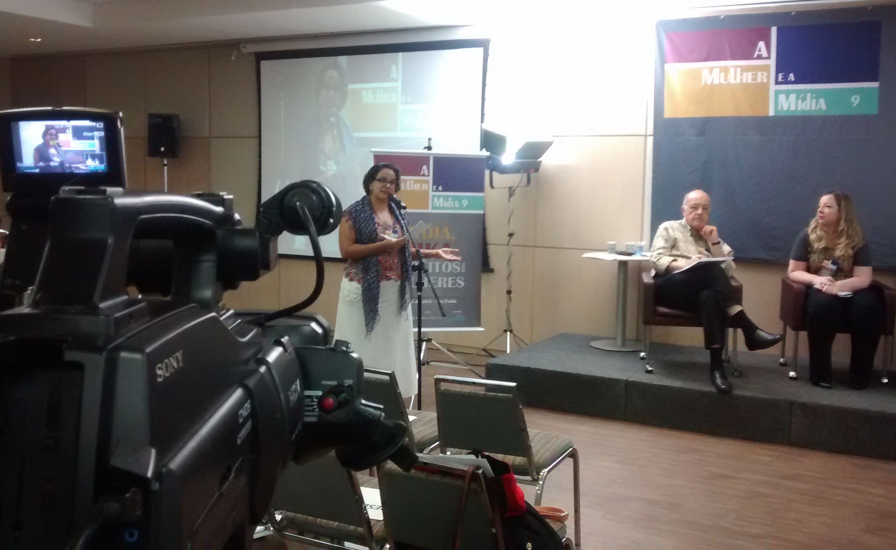 Participantes opinam sobre o debate durante o evento (crédito: Géssica Brandino).